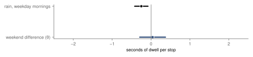
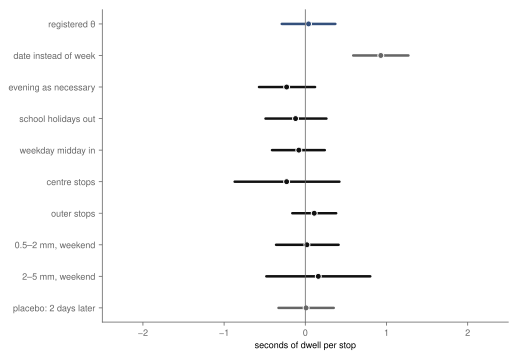
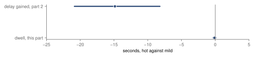

Research · Weather on the rails, part 3 · Prague trams, spring and summer 2025
Are tram stops shorter in rain? Dwell time as a passenger proxy, 2025
Jan Gehl's split between necessary and optional trips predicts that rain shortens weekend tram stops more than weekday-morning ones; Prague's dwell times show no such difference (+0.04 s, −0.29 to 0.37), not supported.
- weekend against weekday morning, in rain
- +0.04 s difference in the rain contrast in dwell · 95 % confidence interval (CI) −0.29 to 0.37 · not supported
- rain, weekday mornings
- −0.25 s per stop, 95 % CI −0.44 to −0.04 (wild bootstrap by date, 10 rain dates), of an average 39.9 s
- heat, all hours
- −0.12 s per stop, 95 % CI −0.33 to 0.10 · not supported
- wet weekend days
- 14 30 rain hours between 08:00 and 21:00
Overwhelmed? Here's the short version
- Gehl's books on public space split what people do outdoors into necessary activities, which happen in any weather, and optional ones, which bad weather cancels. If that holds for trips, rain should thin weekend trams more than weekday-morning ones. Prague publishes no hourly passenger counts for 2025, so this part uses how long a tram stands at a stop, which grows with the number of people getting on and off.
- In rain hours a stop was about 0.25 seconds shorter on weekday mornings. The weekend difference is +0.04 seconds (−0.29 to 0.37), small against the ±2.0 seconds set in advance as "the same", so Gehl's prediction is not supported here.
- Hot hours show no shorter stops (−0.12 seconds, −0.33 to 0.10), so part 2's guess that fewer passengers ride in the heat finds no support in dwell; traffic was not tested.
- Dwell is recorded for only about half of the passes, and wet weekend days may differ from dry ones in more than rain; both limit what a null can say.
- The design was changed once, before dwell was compared with the weather, because the registered weekend window had too few wet hours; the change and its reason are dated in the change log.
Photo: Tiia Monto · CC BY-SA 4.0, toned

Jan Gehl, the Danish architect who spent half a century counting people in streets and squares, divides what they do outdoors into three kinds. Necessary activities, such as going to work or to school, take place in nearly any conditions, because people have no choice. Optional activities, such as a walk, an errand that could wait or a visit, take place only when the conditions invite them, and the weather is the first of those conditions. The third kind, social activities, follows from the other two45. Gehl states this for people on foot and in public space. A tram trip starts and ends on foot, so the same split ought to show in who gets on: in the rain, the commute happens anyway, and the trip to the park, the shops or a friend's flat is the one that gets dropped.
The first two parts of this series asked how the trams' delays differ with the weather. In rain hours trams gained about 9.7 seconds more delay per trip and hour than in dry hours, an adjusted association whose registered placebo failed; in hot hours they gained about 14.9 seconds less than in mild ones, the opposite of part 2's registered expectation, labelled inconclusive. Part 2 named fewer passengers as one possible reading and could not test it. This part asks about the passengers, using the one trace of them that the stop-time data contain.
The question and the measure
Prague has published no hourly passenger counts for 2025. What the vehicle positions do record is how long a tram stands at each stop, from the moment it arrives to the moment it leaves. That dwell time grows with the number of people getting on and off, which is why it is the standard building block of timetable models6, and it is the measure used here. It is a proxy: a stop also lengthens for a wheelchair, a pram, a door fault or a driver waiting for time, and it does not count anybody.
The question was written down before any dwell time was read. In Prague in 2025, does rain shorten tram dwell more in optional hours than in necessary hours? Necessary hours are weekday mornings, 06:00 to 08:59, outside public holidays. Optional hours are Saturdays, Sundays and public holidays. A rain hour has at least 0.5 mm on average at four Czech Hydrometeorological Institute stations3, and a dry hour has none at any of them in the hour or the two before, as in part 1. The estimate is the difference between the two windows in how much shorter a stop is in rain hours than in dry ones. Gehl's prediction is that it is negative, and the rule set in advance reads it as "supported" if the 95 % interval lies wholly below zero, "not supported" if the 90 % interval lies within ±2.0 seconds9, 5 % of an average weekday-morning stop, and "inconclusive" otherwise.
A rain difference common to both windows does not count. Wet passengers may board more slowly, with umbrellas and wet floors, on any day; comparing the windows removes that, provided a wet passenger takes as long on a Saturday as on a Tuesday, and provided wet weekend days do not differ from dry ones in other ways that matter for dwell, such as events, outings that are planned regardless of weather, or the hour of the day the rain falls.
Data
The stop passes are those of parts 1 and 2: Prague Integrated Transport's stop-time history from Golemio2, 15 March to 8 September 2025, as collected for the author's master's thesis1, with the same screening for planned closures and feed gaps. A departure is recorded for about half of the tram passes, all of them at some stops and none at others, so dwell is measured at the stops that record one. Whether the weather changes which passes have a departure was checked from counts alone, before dwell was compared with the weather: 50.82 % of passes have one in rain hours and 50.55 % in dry hours, 0.2 percentage points apart within the same days. The half without a departure is not measured, so a change in dwell there would not show. The first and last stop of each trip, where trams lay over, are left out, as are stops longer than three minutes. Each unit is one route in one direction in one clock hour with at least ten measured stops, 160 696 units in all; its value is the mean dwell, which on a dry weekday morning is 39.9 seconds.
One change before the comparison
The power calculation, which uses the weather but no dwell, showed that the registered design could not be estimated. Between 10:00 and 18:00 on weekends and holidays the window held 15 rain hours on 8 days, short of the ten days the design required, and the registered model compared hours within the same day, which needs a day with both a rain and a dry hour in the window: there were 3 such weekend days and 1 such weekday morning. The design was changed then, before dwell was joined to the weather, and the change was committed with its reason. Optional hours now run from 08:00 to 21:00, because a weekend outing spans the day, and hours are compared within the week rather than within the day, as in part 2. The definitions of rain, the reading rule and the margin did not change. The new window holds 30 rain hours on 14 weekend days, against 19 rain hours on 10 weekday mornings, and the smallest difference the design could detect was put at 0.8 seconds.
How the estimate works
The model gives every route, direction, hour and weekday its own level and every week its own level, so a rain hour is compared with dry hours of the same route at the same time of day in the same week. It has a rain term, which applies to both windows, and a weekend difference in that term, which is the estimate of interest. It is fitted by ordinary least squares with pyfixest7, each unit weighted by its number of stops, clustered by date. Because fewer than 30 weekend days had rain, the interval comes from a wild cluster bootstrap by date8, which counts the evidence as 14 wet weekend days, not as thousands of units.
Rain
On a weekday morning, a tram's stop in a rain hour was 0.25 seconds shorter than in a dry hour (95 % CI −0.44 to −0.04, a wild cluster bootstrap by date over 10 rain dates, run after publication; the analytic interval first printed here, −0.42 to −0.08, was narrower), about 0.6 % of an average stop. On weekends and holidays the difference between the windows is +0.04 seconds (95 % CI −0.29 to 0.37; 90 % CI −0.25 to 0.32), small against the ±2.0 seconds set in advance as "the same". The 90 % interval lies within that band, so by the rule fixed in advance Gehl's prediction is not supported (fig. 1). By amount of rain there is no clear gradient: −0.27 seconds at 0.5–2 mm in an hour, −0.21 at 2–5 mm and −0.48 at 5 mm or more, with overlapping intervals, and at no amount of rain does the weekend stand apart.
Stops were about 0.25 s shorter in rain hours on weekday mornings; the weekend difference is +0.04 s, inside the ±2.0 s band.

A shorter stop in rain hours is the opposite of what wet passengers and umbrellas would do on their own, and is consistent with fewer people boarding on any day, though dwell does not count them. The part of Gehl's argument this study was built to test, that bad weather keeps home mainly those whose trip was optional, does not show in dwell.
Checks
Most registered checks stay near zero; one, the comparison within the day, does not, and one, "delay held", was not run before publication (fig. 2). Taking the weekday evening, 15:00 to 18:59, as the necessary window gives −0.23 seconds (−0.57 to 0.12). Leaving out the school holidays, when commuting thins, gives −0.12 (−0.49 to 0.26), and adding weekday middays as a third window gives −0.08 (−0.41 to 0.24). At the 46 stops inside Prague 1 and 2 the difference is −0.23 (−0.87 to 0.42), at the rest +0.11 (−0.16 to 0.38). Light and moderate rain give +0.02 (−0.36 to 0.41) and +0.16 (−0.48 to 0.80); no weekend hour reached 5 mm. The placebo, which uses the rain of the same hour two days later, gives +0.01 seconds (−0.33 to 0.35).
The registered "delay held" check adds the unit's delay gained, part 1's outcome for the same route, direction, date and hour, as a control, to separate a tram standing longer because it is early or held from one standing longer because people board. It was registered in the design but not run before publication; it was run on 9 October 2026. The weekend difference becomes +0.10 seconds (−0.21 to 0.42, clustered by date) and the weekday-morning rain difference −0.35 seconds (−0.52 to −0.17), so holding for time does not explain the shorter stops in rain hours.
The exception is the comparison within the day, as the design first registered it. It gives +0.93 seconds (0.59 to 1.27): the opposite sign, with a narrow interval. That interval should not be trusted. Within a day the weekend difference can only be learned from days that have both a rain and a dry hour in the window, and there were 3 weekend days and 1 weekday morning of that kind; the interval, clustered by date, takes no account of how few they are. This is why the design moved to the week before the comparison was run, and it is reported here because it was registered.
The checks stay near zero, except the comparison within the day, which rests on three or four days.

Heat, and part 2
Part 2 found that a Prague tram gained about 14.9 seconds less delay in a dry hour at 30 °C or more than in a mild hour of the same week (−20.9 to −8.2), labelled inconclusive because the registered hypothesis expected the opposite sign, and offered fewer passengers as one reading. If fewer people rode in hot hours, stops would be shorter. They are not clearly shorter: between a hot hour and a mild hour of the same route and week, a tram's stop differs by −0.12 seconds (95 % CI −0.33 to 0.10, from 11 hot days), within ±2.0 seconds, so the secondary hypothesis is not supported (fig. 3). Comparing weekday late afternoons with weekend afternoons in the heat gives −0.18 seconds (−0.84 to 0.48). Shorter stops do not account for part 2's result; traffic at junctions, roadworks and other explanations remain untested here.
Hot hours went with about 14.9 s less delay gained in part 2, but not with shorter stops (−0.12 s).

What this means
Measured: in rain hours, Prague's trams stood at their stops a little less, about a quarter of a second, and the weekend difference is +0.04 seconds (−0.29 to 0.37), small against the registered ±2.0 second band. The interval is narrow enough to make a weekend difference beyond about 0.4 seconds either way unlikely, at the half of passes that record dwell. If rain cancelled weekend trips much more than commutes, as Gehl's split predicts for people on foot, dwell on wet weekends would fall more; it does not. Inferred, and untested: weekend tram riders in Prague may not be the optional travellers the theory has in mind (one speculation is that a tram is itself shelter from the rain), or a change in who boards may be too small to move a stop by more than a fraction of a second. Hot hours show no shorter stops, so part 2's result needs another explanation than fewer passengers boarding.
What this does not show
Dwell is a proxy for boarding, recorded for about half of the passes (50.55 % in dry hours), and it is not a passenger count. Wet weekend days may differ from dry ones in more than rain, in events, in the hour the rain fell or in who travels anyway, and the model cannot separate those from the rain. Necessary and optional are defined by the clock and the calendar, not by asking anyone why they travel. The weekend estimate rests on 14 wet days of one season, and the design's windows were changed once, for a stated reason, before the comparison. Gehl's claim is about people walking and staying in public space; this is its trace in who gets on a tram, and a null here does not test it for streets and squares. Buses, other years and other cities are not covered.
Reproduction
Every number on this page is filled in from the result files by a script, from the repository root:
- The rain study's steps, which provide the weather and the screening: Are Prague's trams later in rain hours?, Reproduction.
tools/gehl/screen.pyandcoverage.py: the dwell units and the coverage check.power.py: the windows and the power calculation, as registered and as changed.estimate.py, checked bytest_gehl.py: the registered estimates and checks.posthoc.py: the registered "delay held" check and the bootstrap of the morning interval, both run after publication, written todocs/research/gehl-trams-posthoc.json.article.py: the figures and this page.
The design is docs/research/gehl-trams-design.md.
References
- Šandová, B. (2026). Persistence Dynamics and Welfare Costs of Urban Public Transport Delays. Master's thesis, Institute of Economic Studies, Faculty of Social Sciences, Charles University, Prague. Summary at bsandova.com/texts/thesis. Not yet in a public repository.
- Operátor ICT. Golemio, Prague's open-data platform: Prague Integrated Transport stop-time history, collected 15 March – 8 September 2025. golemio.cz. Accessed 8 October 2026.
- Czech Hydrometeorological Institute (ČHMÚ). Open climate data: hourly precipitation (SRA1H) and ten-minute air temperature (T), stations Praha-Ruzyně, Praha-Libuš, Praha-Kbely and Praha-Klementinum, 2025; CC BY 4.0. opendata.chmi.cz. Accessed 8 October 2026.
- Gehl, J. (2011). Life Between Buildings: Using Public Space. Washington, DC: Island Press. pp. 9–11.
- Gehl, J. (2010). Cities for People. Washington, DC: Island Press. pp. 20–21.
- Dueker, K. J., Kimpel, T. J., Strathman, J. G., Callas, S. (2004). Determinants of bus dwell time. Journal of Public Transportation 7(1), 21–40. doi:10.5038/2375-0901.7.1.2. Accessed 8 October 2026.
- Fischer, A., and contributors. pyfixest: fast high-dimensional fixed-effects regression in Python, version 0.60.0. github.com/py-econometrics/pyfixest. Accessed 8 October 2026.
- Cameron, A. C., Gelbach, J. B., Miller, D. L. (2008). Bootstrap-based improvements for inference with clustered errors. The Review of Economics and Statistics 90(3), 414–427. doi:10.1162/rest.90.3.414. Accessed 8 October 2026.
- Lakens, D. (2017). Equivalence tests: a practical primer for t tests, correlations, and meta-analyses. Social Psychological and Personality Science 8(4), 355–362. doi:10.1177/1948550617697177. Accessed 8 October 2026.